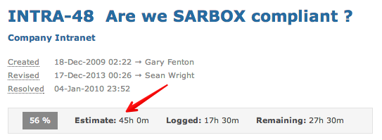
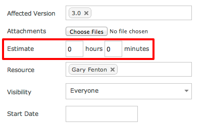
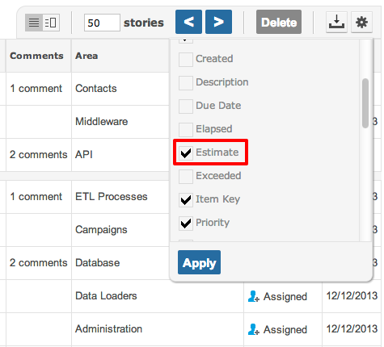

Any item can be assigned a work estimate. Work estimates can be assigned in both hours and minutes.

You can specify work estimates when creating or editing an item.

You can also view work estimates on the items grid.

Note Process screen setup can restrict who interacts with work estimates